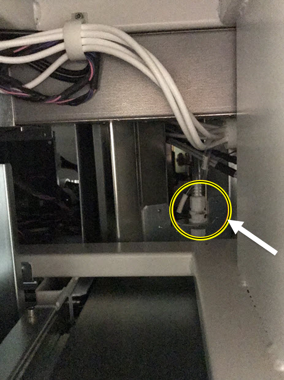

Replacing the Sample Storage Wheel Subsystem
This topic includes information about how to replace the sample storage wheel subsystem.
Safety Reminder
Servicing the DxI 9000 instrument involves potential risks for pinch and puncture, electrical shock, and exposure to hazardous materials. You must mitigate these risks by taking appropriate countermeasures. See Safety for more information.
| Table of Contents |
|---|
| Recommended Tools |
| Removing the Subsystem |
| Installing the Subsystem |
| Alignments |
| Verification |
Recommended Tools
The following tools are recommended for removal/installation of the Sample Storage Wheel Subsystem:
- 4mm hex driver (for M5 screws)
- 3mm hex driver (for M4 screws)
Removing the Subsystem
Follow these steps to remove the sample storage wheel subsystem.
- Turn off the instrument. See Turning Off the Instrument for more information.
- Open the upper left main cover and left rear cover.
- To remove the cooling fan and gain better access to the module, remove the (2) screws (3mm driver) securing the instrument cooling fan at the rear of the instrument, and disconnect the electrical connector.
- Remove the Sample PnP to gain better access to the sample wheel for easy removal. See Replacing the Sample Pick and Place (PnP) Subsystem for more information.
- Disconnect the following cables from the DMCC (D7) at the rear of the instrument:
- J2 blue connector
- J3 red connector
- J4 yellow connector
- J5 white/black cable
- J6 24V power
- J7
- J8
- J9
- J10
- J11
- Disconnect the two cables near the base of the subsystem:
- Peltier
- Thermistor
- Remove the following four screws (4mm driver) which secure the subsystem to the instrument chassis:
- Two at the front of the subsystem, behind the bulk feeder subsystem
- Two at the rear of the subsystem
- Disconnect the drain tube (quick connect) from the lower level and route it up to the wheel to allow removal of the subsystem. See the circle in the illustration below for reference.

- Open the SPU.
- Remove the front cosmetic panel.
- Locate the tube (it has a quick connect) in the cavity to the left of the RSM.
- Disconnect the tube.
-
Note: Be sure the Sample PnP and pipettors are moved out of the way to allow adequate room to perform the procedure.Carefully remove the entire subsystem, ensuring that no cables or wires are pinched or stretched.Note: The assembly must be turned upside down and rotated counterclockwise to remove it from the instrument.
Installing the Subsystem
Follow these steps to install the sample wheel subsystem.
- Carefully place the subsystem into the instrument so that it seats on the positioning pins in the instrument chassis.
Note: The subsystem must be placed upside down and rotated clockwise in the instrument.
- Secure the subsystem to the instrument chassis with the following (4) screws (4mm driver):
- Two at the front of the subsystem, behind the bulk feeder subsystem
- Two at the rear of the subsystem
- Route the drain tube through the instrument and reconnect it at the quick connect in the lower level.
- Connect the two cables near the base of the subsystem:
- Peltier
- Thermistor
- Connect the following cables from the DMCC (D7) at the rear of the instrument:
- Blue connector at J2
- Red connector at J3
- Yellow connector at J4
- White/black cable at J5
- 24V power at J6
- J7
- J8
- J9
- J10
- J11
- Install the instrument cooling fan at the rear of the instrument.
- Turn on the instrument. See Turning On the Instrument for more information.